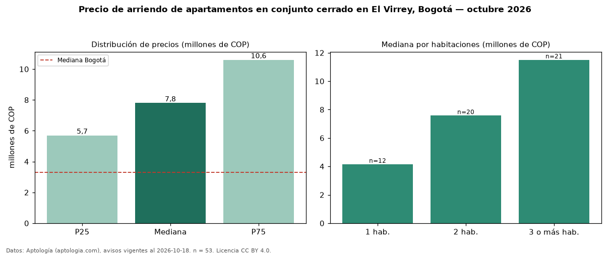

Precio de arriendo de apartamentos en conjunto cerrado en El Virrey, Bogotá — octubre 2026
COP 7,80 millones al mes es el canon mediano de apartamentos en conjunto cerrado en arriendo en El Virrey, Bogotá (n = 53 avisos). Prácticamente coincide con la mediana de todos los apartamentos en arriendo de El Virrey (COP 7,80 millones, n = 109); este segmento reúne el 49 % de esos avisos. Por metro cuadrado, la mediana es COP 72.917/m² al mes (n = 53), 5 % por encima del conjunto de referencia (COP 69.134/m²). El área mediana anunciada es 110 m². El segmento con más oferta es el de 3 o más habitaciones (21 avisos, mediana COP 11,50 millones); pasar de 1 habitación a 3 o más habitaciones cambia la mediana +177 %. La administración mediana declarada es COP 1,30 millones al mes (n = 17), aparte del canon. La mitad central de los avisos va de COP 5,70 millones a COP 10,60 millones (razón 1,9), una dispersión moderada. El estrato más frecuente es 6 (78 % de los avisos con estrato). Datos: Aptología (aptologia.com), CC BY 4.0 — https://www.aptologia.com/arriendo/bogota/el-virrey. Archivos: PDF, CSV con las cifras y gráfica PNG.

| Avisos únicos | 53 |
|---|---|
| Percentil 25 | COP 5.700.000 |
| Mediana | COP 7.800.000 |
| Percentil 75 | COP 10.600.000 |
| Mediana por m² | COP 72.916 |
Fuente: avisos vigentes de portales inmobiliarios recopilados por Aptología, deduplicados (mínimo 30 avisos únicos por celda). Precios pedidos, no cerrados. Fecha: 2026-10-18.